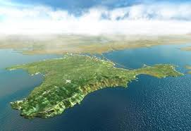

Командир воинской части в Бахчисарае не сдавался россиянам
Несколько украинских СМИ недавно сообщили, что командир бахчисарайского автобатальона подполковник Владимир Садовник, а также несколько военнослужащих — контрактников и прапорщиков, перешли на сторону крымского правительства.Произошло это якобы 10 марта, когда Садовник вместе с автоматчиками без опознавательных знаков проник на территорию своей воинской части.
Однако сам похищенный в Бахчисарае командир Владимир Садовник в интервью ТСН опроверг слухи о переходе на сторону россиян.По его словам, сейчас автомобильный батальон захвачен неизвестными в форме, которые полностью контролируют периметр воинской части и блокируют доступ к важнейшим объектам.По словам Садовника, у них есть автоматическое оружие, а также похожие по внешним признакам пистолеты Макарова, также есть ручные гранаты и снайперские винтовки.
Видеосюжет, в котором подано интервью командира части, вы можете посмотреть здесь.
По словам командира части, неизвестные уже подняли на флагштоке российский флаг, офицеров пытаются подкупить деньгами и должностями.
Садовник также рассказал, что захватчики предлагали ему около 40 тысяч гривен за переход на их сторону.Но командир отказался.
По материалам: ТСН.
Posted On: 2014-03-11T21:00:00

Content Date: 2014-03-11
Download Date: 2021-07-16
Document ID: L0C04F8BX